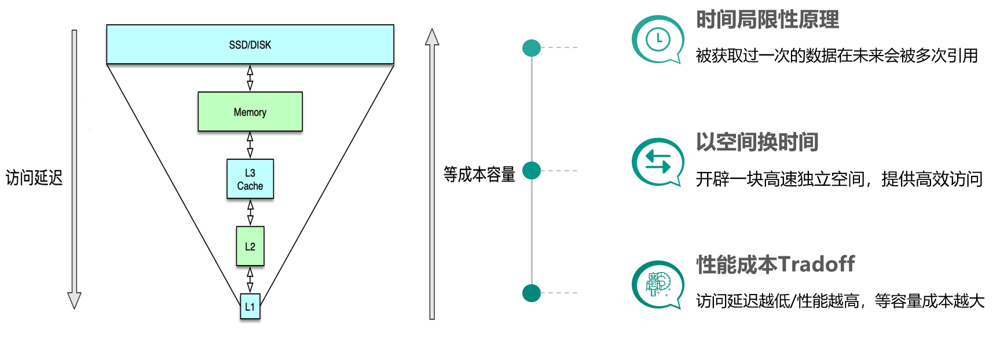

缓存构建的基本思想是利用时间局限性原理，通过空间换时间来达到加速数据获取的目的，同时由于缓存空间的成本较高，在实际设计架构中还要考虑访问延迟和成本权衡问题。
获取过一次的数据在未来会被多次引用，比如一条微博被一个人感兴趣并阅读后，它大概率还会被更多人阅读，当然如果变成热门微博后，会被数以百万/千万计算的更多用户查看。
因为原始数据获取太慢，所以我们开辟一块高速独立空间，提供高效访问来达到数据获取加速的目的。
构建系统时希望系统的访问性能越高越好，访问延迟越低小越好。但维持相同数据规模的存储及访问，性能越高延迟越小，成本也会越高，所以在系统架构设计时，需要在系统性能和开发运行成本之间做取舍。
在实际业务场景中，缓存中存储的往往是需要频繁访问的中间数据甚至最终结果，这些数据相比 DB 中的原始数据小很多，这样就可以减少网络流量，降低网络拥堵，同时由于减少了解析和计算，调用方和存储服务的负载也可以大幅降低。缓存的读写性能很高，预热快，在数据访问存在性能瓶颈或遇到突发流量，系统读写压力大增时，可以快速部署上线，同时在流量稳定后，也可以随时下线，从而使系统的可扩展性大大增强。
凡事有利必有弊
一般来讲，服务系统的全量原始数据存储在 DB 中（如 MySQL、HBase 等），所有数据的读写都可以通过 DB 操作来获取。但 DB 读写性能低、延迟高，如 MySQL 单实例的读写 QPS 通常只有千级别（3000～6000），读写平均耗时 10～100ms 级别，如果一个用户请求需要查 20 个不同的数据来聚合，仅仅 DB 请求就需要数百毫秒甚至数秒。而 cache 的读写性能正好可以弥补 DB 的不足，比如 Memcached 的读写 QPS 可以达到 10～100万 级别，读写平均耗时在 1ms 以下，结合并发访问技术，单个请求即便查上百条数据，也可以轻松应对。
但 cache 容量小，只能存储部分访问频繁的热数据，同时，同一份数据可能同时存在 cache 和 DB，如果处理不当，就会出现数据不一致的问题。所以服务系统在处理业务请求时，需要对 cache 的读写方式进行适当设计，既要保证数据高效返回，又要尽量避免数据不一致等各种问题。